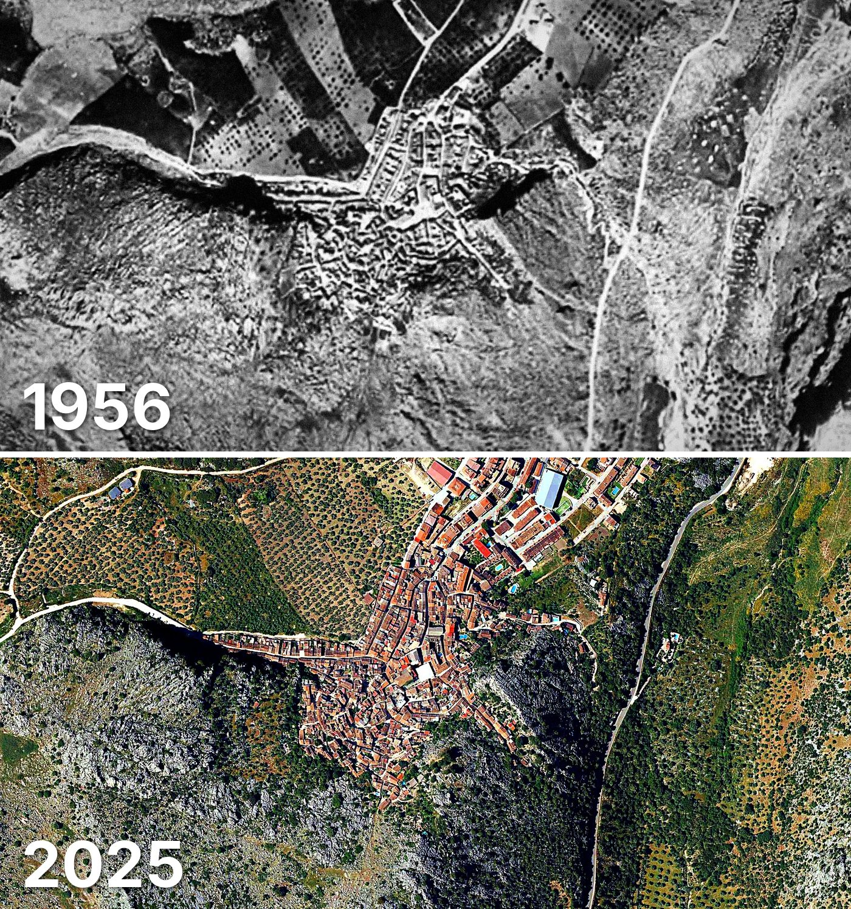

Montejaque
Montejaque tiene 707 edificios y 841 viviendas, y 945 habitantes en 2025. La mitad de sus edificios es de 1978 o posterior.
Cuándo se construyeron sus edificios
Desde 2015 se han terminado 3 edificios. 1 edificios son anteriores a 1900.

Las calles de Montejaque con más viviendas
- Avenida Andalucía · 80 viviendas
- Avenida Europa · 49 viviendas
- Calle Doctor Vázquez Gutiérrez · 49 viviendas
- Calle Santa Cruz · 42 viviendas
- Calle Manuel López · 41 viviendas
- Calle Nueva · 33 viviendas
- Calle Cardenal Herrera Oria · 27 viviendas
- Calle Consejo · 27 viviendas
Toda la información de Montejaque en CASAS.ES →
Fotos de Montejaque para publicar
Estas fotos aéreas de Montejaque, de 1956 y de 2025, se pueden publicar gratis en un periódico, un blog, la web del ayuntamiento o las redes, citando la fuente como se indica debajo.

Descargar: las dos juntas · 1956 · 2025 (JPG, 1.400 px de ancho)


Texto listo para publicar
Montejaque desde el aire: así era en 1956 y así es en 2025
Las dos fotos muestran el mismo encuadre de Montejaque con 69 años de diferencia: arriba, el Vuelo Americano de 1956; abajo, la foto aérea del PNOA de mayo de 2025. Hoy Montejaque tiene 707 edificios y 841 viviendas, y 945 habitantes en 2025. La mitad de sus edificios es de 1978 o posterior. El 26 % de sus edificios ya estaba en pie antes de 1960.
Más datos de Montejaque en CASAS.ES: casas.es/malaga/montejaque
Cita para copiar
Fotos: Vuelo Americano Serie B (1956-57) y PNOA 2025, cedidos por © Instituto Geográfico Nacional (CC BY 4.0, scne.es). Datos y composición: <a href="https://casas.es/malaga/montejaque/">los datos de Montejaque en CASAS.ES</a>Descarga: municipios (CSV) · calles (CSV) · Wikidata (Q842247) · cómo usarlos en Python (dev.to) · también en OSF, Figshare y B2SHARE